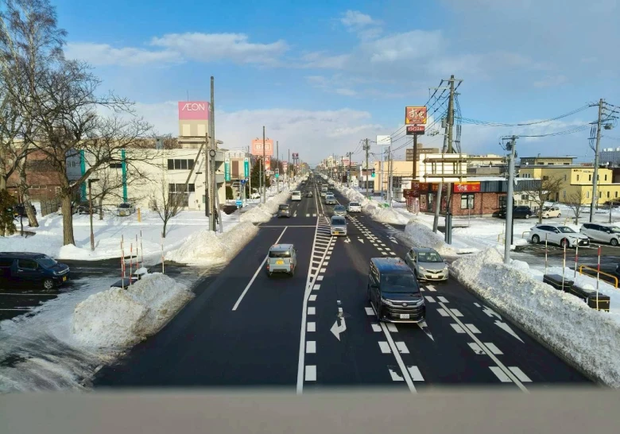
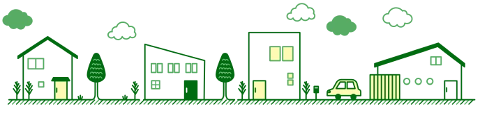
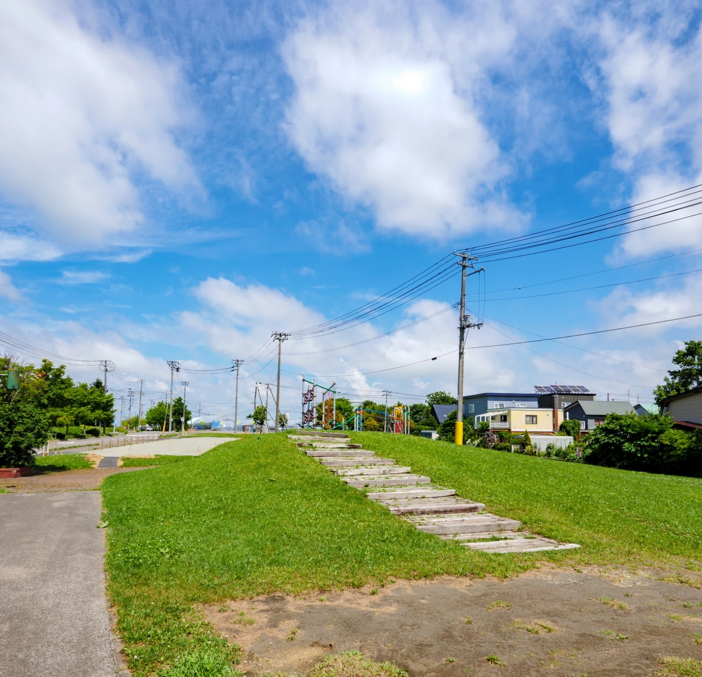
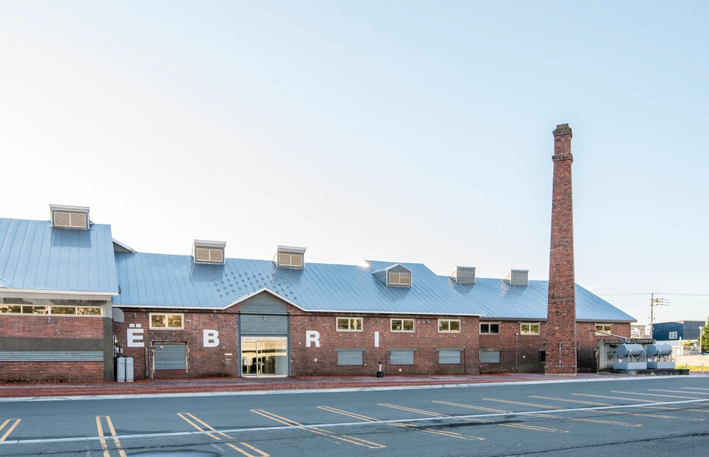
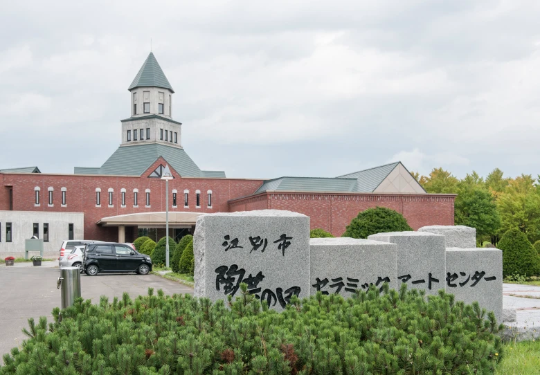
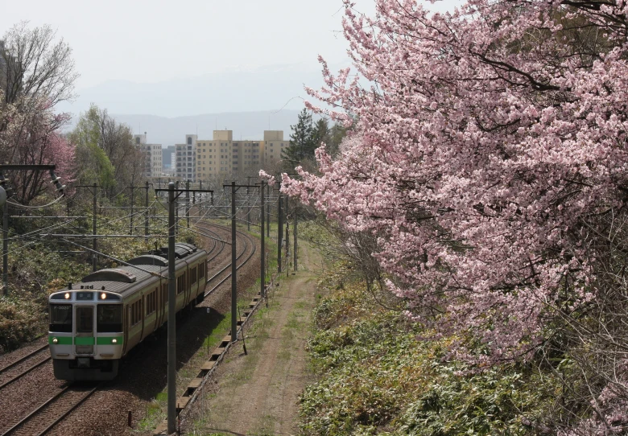
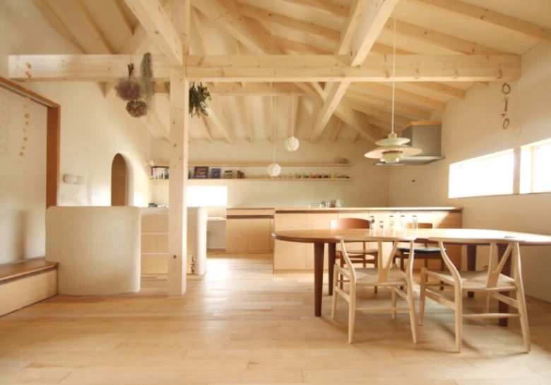
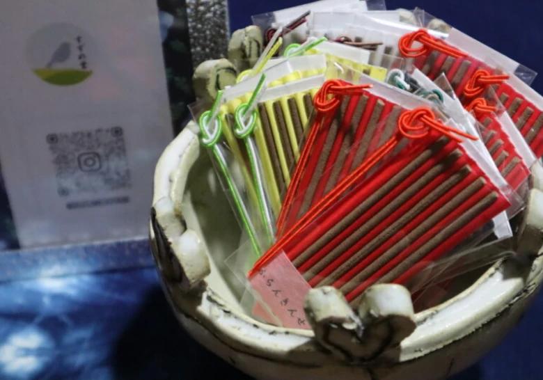
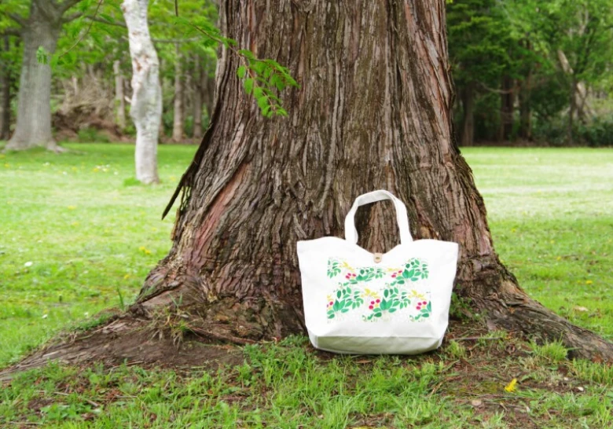
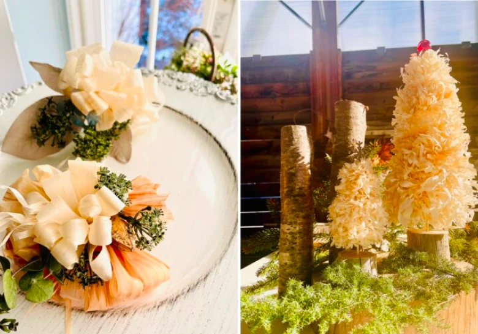

(01)
地元で愛される店と
大手の便利さが共存する街

江別市には、大麻銀座商店街やËBRIなど地域に根付いた店舗があり、日常に寄り添う暮らしが実現できます。加えて、イオンモールや蔦屋書店などの大型商業施設や、国道12号線沿いのロードサイド店舗も充実しており、身近さと利便性を兼ね備えた、暮らしやすい街です。


江別市は、札幌市の東側に位置する、都市の利便性と豊かな自然が調和したまちです。石狩川や野幌森林公園に代表される広大な自然環境に恵まれながら、JRや幹線道路による交通アクセスも良く、札幌のベッドタウンとして発展してきました。
れんが産業の歴史を背景に持ち、現在も赤れんがを活かした街並みや文化が息づいています。また、大学や研究機関が集積する文教都市としての側面もあり、落ち着いた住環境と学びの場が共存する点が江別市の大きな魅力です。

江別市が移住に最適な理由や
充実した住環境について紹介します。
(01)

江別市には、大麻銀座商店街やËBRIなど地域に根付いた店舗があり、日常に寄り添う暮らしが実現できます。加えて、イオンモールや蔦屋書店などの大型商業施設や、国道12号線沿いのロードサイド店舗も充実しており、身近さと利便性を兼ね備えた、暮らしやすい街です。
(02)
市内には総合病院「江別市立病院」があり、子どもからお年寄りまで対応し、地域の医療を支えています。また、病院は5か所、内科・外科・皮膚科・眼科などの診療所は約80か所あるほか、札幌にもJRで約20分で行けるため、札幌の大きな病院も身近にあり、安心して生活できます。
(03)

市内には江別市情報図書館と、北海道立図書館の2つがあり、蔵書の数は計150万冊以上あります。 そのほかにも、セラミックアートセンター、公民館、ガラス工芸館などの文化施設では、学びや趣味、地域交流を気軽に楽しめます。市民体育館や多くの公園も身近にあり、無理のない運動や散策で心身の健康を保てます。
(04)

市内には5つのJR駅と2つの高速インターチェンジがあり、札幌へはJRで約20分、車で約40分、新千歳空港へはJRで約1時間、車で約50分で到着できます。 朝と夕方の通勤時間帯には約10分に1本の頻度で札幌行きのJRが運行しているほか、3社のバス会社が市内全体をカバーしており、地域によっては車がなくても不自由なく生活できます。
江別市で営まれている、自然を大切にし、素材を活かした商品を提供しているお店や会社をご紹介します。
(01)

北海道産の木材、江別産レンガ、稚内産の珪藻岩など、自然素材ならではのぬくもりを大切にした注文住宅。丈夫で長持ち、経年変化で古くなっても味が出る素材、通気性の良さ等、快適な家造りをコンセプトとしています。
(02)

白檀、沈香など高級天然香料を原料に自然の織りなす彩りを感じながら、お香を手づくりしています。すずめ堂のお香は、祈りの香りとしては勿論のこと、普段の生活に心の余裕と暮らしの美しさを演出します。ぜひお試しになってみてください。
(03)

蔦華環（ツタハナメグル）は、植物の美しさ身近に感じてほしいという想いから生まれたブランドです。北海道で観察される植物を季節に合わせて丁寧に表現しています。「蔦」は広がり続けるテキスタイル、「華」は静かな華やかさ、「環」は季節や想いのつながりを表し、日常に自然の息吹がそっと寄り添うアイテムを届けます。
(04)

カンナくずなど自然素材で作るリース。天然木のぬくもりとほのかな香りでナチュラルな空間を演出します。ワークショップも開催してるので、インスタをチェックしてみてください。
(05)
江別の素材や身近な草花を使いキャンドルを製作。キャンドルアーティスト山内美智子さんが手がける自然素材の温もりを感じるキャンドル。製作体験やレッスンも開催しています。